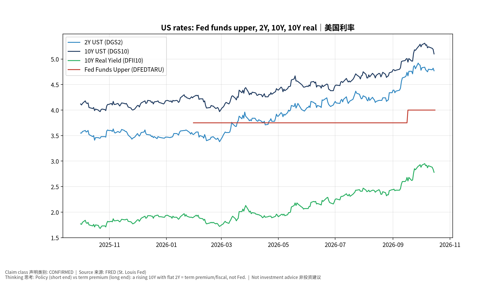
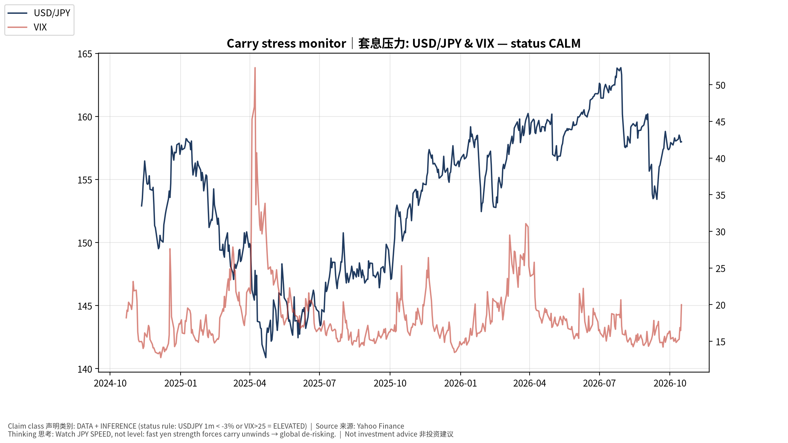
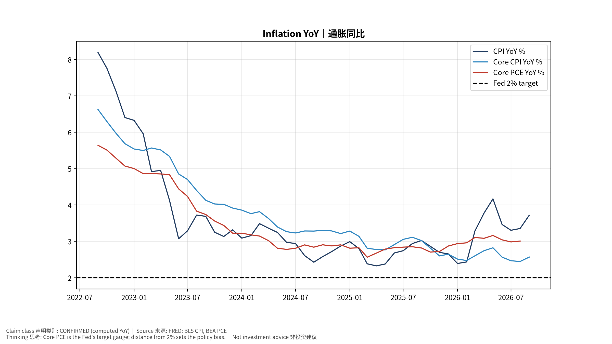
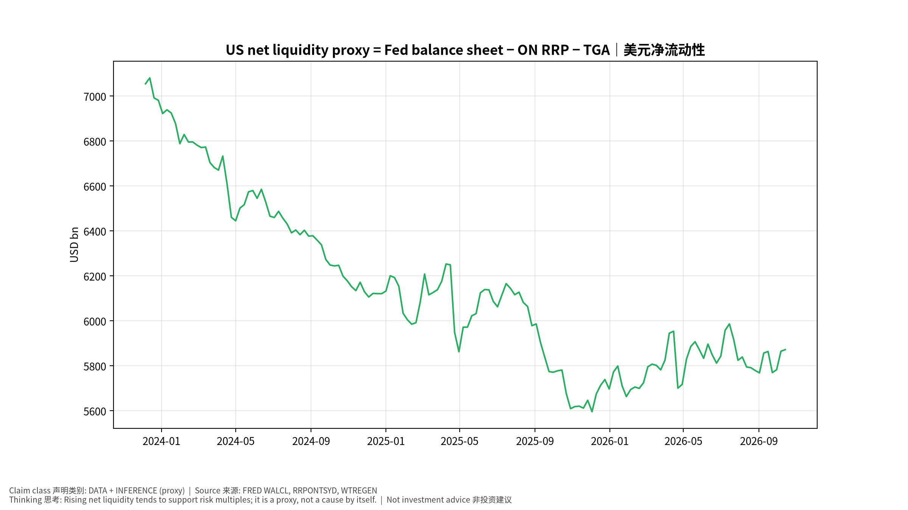
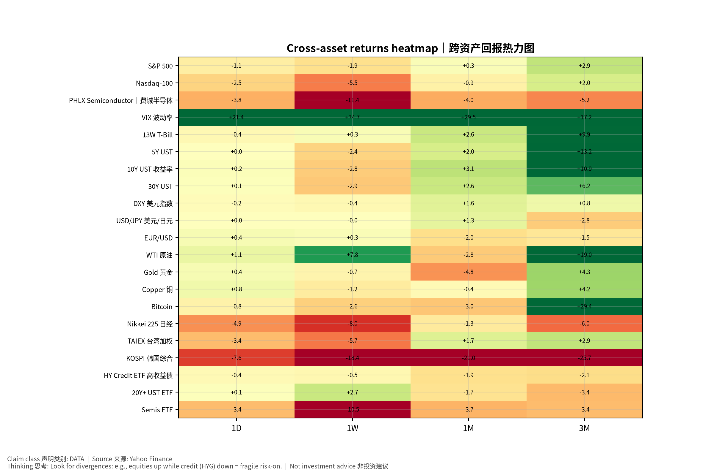

数据快照 20261017-0755 (SGT)。来源: FRED、Yahoo Finance。非投资建议。
通胀/就业 → FOMC 反应函数 → 2Y → 10Y(含期限溢价/财政) → 实际利率 → WACC → 成长股估值倍数；BOJ → JGB → USD/JPY 速度 → 套息平仓 → 全球流动性。
AI Capex ↑ → 生产率 ↑ → 单位劳动成本 ULC ↓ → 核心通胀 ↓ → Fed 更鸽 (鸽派路径)；或 AI Capex ↑ → 电力/建设/芯片需求过热 → 通胀 ↑ → Fed 更鹰 (过热路径)。证据: 11/5 生产率与成本(BLS, CONFIRMED)、ECI 10/30。
| 资产 | 代码 | 最新 | 日期 | 1D | 1W | 1M | 1Y |
|---|---|---|---|---|---|---|---|
| S&P 500 | ^GSPC | 7,659.440 | 2026-10-16 | -1.1% | -1.9% | +0.3% | +14.8% |
| Nasdaq-100 | ^NDX | 29,187.549 | 2026-10-16 | -2.5% | -5.5% | -0.9% | +18.0% |
| PHLX Semiconductor｜费城半导体 | ^SOX | 11,137.287 | 2026-10-16 | -3.8% | -11.4% | -4.0% | +64.6% |
| VIX 波动率 | ^VIX | 19.990 | 2026-10-16 | +21.4% | +34.7% | +29.5% | -3.8% |
| 13W T-Bill | ^IRX | 4.070 | 2026-10-16 | -0.4% | +0.3% | +2.6% | +5.5% |
| 5Y UST | ^FVX | 4.899 | 2026-10-16 | +0.0% | -2.4% | +2.0% | +35.0% |
| 10Y UST 收益率 | ^TNX | 5.098 | 2026-10-16 | +0.2% | -2.8% | +3.1% | +26.0% |
| 30Y UST | ^TYX | 5.436 | 2026-10-16 | +0.1% | -2.9% | +2.6% | +17.2% |
| DXY 美元指数 | DX-Y.NYB | 101.779 | 2026-10-16 | -0.2% | -0.4% | +1.6% | +3.0% |
| USD/JPY 美元/日元 | JPY=X | 157.987 | 2026-10-16 | +0.0% | -0.0% | +1.3% | +3.2% |
| EUR/USD | EURUSD=X | 1.124 | 2026-10-16 | +0.4% | +0.3% | -2.0% | -3.3% |
| WTI 原油 | CL=F | 99.040 | 2026-10-16 | +1.1% | +7.8% | -2.8% | +70.0% |
| Gold 黄金 | GC=F | 4,186.700 | 2026-10-16 | +0.4% | -0.7% | -4.8% | -0.4% |
| Copper 铜 | HG=F | 6.562 | 2026-10-16 | +0.8% | -1.2% | -0.4% | +32.0% |
| Bitcoin | BTC-USD | 81,499.219 | 2026-10-16 | -0.8% | -2.6% | -3.0% | +15.5% |
| Nikkei 225 日经 | ^N225 | 64,425.949 | 2026-10-15 | -4.9% | -8.0% | -1.3% | +43.4% |
| TAIEX 台湾加权 | ^TWII | 46,969.871 | 2026-10-15 | -3.4% | -5.7% | +1.7% | +83.6% |
| KOSPI 韩国综合 | ^KS11 | 5,554.220 | 2026-10-15 | -7.6% | -18.4% | -21.0% | +64.0% |
| HY Credit ETF 高收益债 | HYG | 76.860 | 2026-10-16 | -0.4% | -0.5% | -1.9% | +0.9% |
| 20Y+ UST ETF | TLT | 80.050 | 2026-10-16 | +0.1% | +2.7% | -1.7% | -7.6% |
| Semis ETF | SMH | 539.790 | 2026-10-16 | -3.4% | -10.5% | -3.7% | +58.4% |
| 指标 | 代码 | 最新 | 日期 |
|---|---|---|---|
| CPI | CPIAUCSL | 336.298 | 2026-09-01 |
| Core CPI | CPILFESL | 338.896 | 2026-09-01 |
| Core PCE | PCEPILFE | 130.455 | 2026-08-01 |
| PPI Final Demand | PPIFIS | 159.780 | 2026-09-01 |
| Unemployment Rate | UNRATE | 4.200 | 2026-09-01 |
| Nonfarm Payrolls | PAYEMS | 159,044.000 | 2026-09-01 |
| AHE | CES0500000003 | 37.810 | 2026-09-01 |
| Initial Claims | ICSA | 199,000.000 | 2026-10-10 |
| Real GDP | GDPC1 | 24,408.011 | 2026-04-01 |
| Fed Funds Upper | DFEDTARU | 4.000 | 2026-10-16 |
| 2Y UST | DGS2 | 4.770 | 2026-10-15 |
| 10Y UST | DGS10 | 5.100 | 2026-10-15 |
| 10Y-2Y | T10Y2Y | 0.350 | 2026-10-16 |
| 10Y Breakeven | T10YIE | 2.350 | 2026-10-16 |
| 10Y Real Yield | DFII10 | 2.780 | 2026-10-15 |
| HY OAS | BAMLH0A0HYM2 | 3.230 | 2026-10-15 |
| Fed Balance Sheet | WALCL | 6,755,639.000 | 2026-10-14 |
| ON RRP | RRPONTSYD | 0.100 | 2026-10-16 |
| TGA | WTREGEN | 883,373.000 | 2026-10-14 |
| Chicago NFCI | NFCI | -0.499 | 2026-10-09 |
| Japan 10Y (monthly) | IRLTLT01JPM156N | 3.050 | 2026-09-01 |




